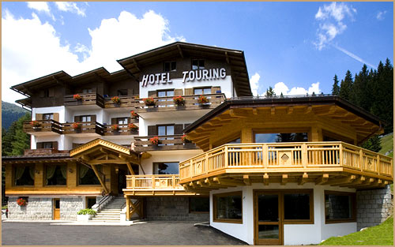
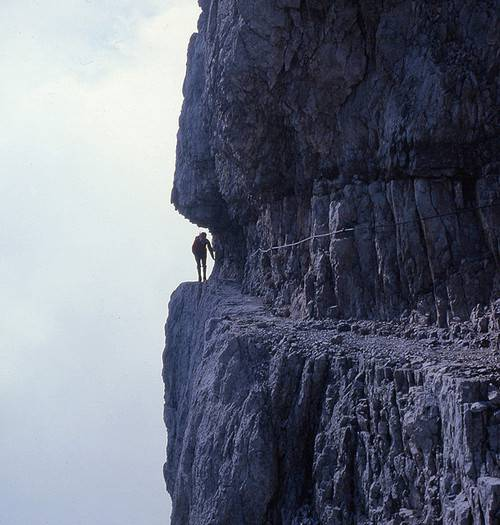
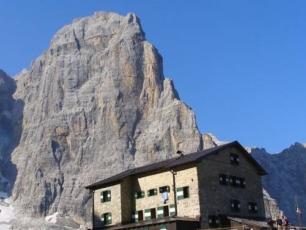

Welcome to ASIC 2008
The Seventh Annual Summer Interdisciplinary Conference, held at the Hotel Touring in Madonna di Campiglio, on the west side of the Brenta group of the Italian Dolomites, Sunday, July 6 – Friday, July 11, 2008.
The Brenta Dolomites, rising directly above Madonna di Campiglio.
See htouring.it for the hotel, and campiglio.com for the resort village. Richard M. Shiffrin of Indiana University – Bloomington is the organizer. Email correspondence should be directed to shiffrin@indiana.edu or mailed to Richard M. Shiffrin at Indiana University (see the Contact tab for the address).
About the conference
The subject matter of ASIC is interdisciplinary, within the broad frame of cognitive science. ASIC uses the successful format of previous ASIC and AIC conferences: days are free for leisure activities and discussions among participants, and talks and posters are in the later afternoon and early evening, followed by dinner. The conference is open to all interested parties, and an invitation is not needed to attend. Due to the small number of speaking spots, the organizer selects the attendees who give talks; additional attendees have the opportunity to present posters.
Conference aims
The conference covers a wide range of subjects in cognitive science, including modeling of cognition; neuroscience and cognitive neuroscience; psychology (perception, psychophysics, attention, information processing, memory and cognition); computer science and artificial intelligence; machine intelligence and learning; methodology and statistics; linguistics, psycholinguistics and computational linguistics; and philosophy of mind and cognitive science.
Conference format
There is a single speaking session each day. If the number of participants exceeds the number of speaking slots (about 42), the first half session on a chosen day is devoted to posters. The conference starts with registration and a reception from 15:00–16:30 on Sunday, July 6. On subsequent days (except a poster day) there are drinks and light snacks from 16:15–16:30, followed by a session of seven spoken presentations including a mid-session drink break.
This format frees most of the day for activities with colleagues, family, and friends. The time frame allows day trips to nearby sites, but return should be arranged in time for the 16:15 session start — including for certain activities in the highest points of the Brenta Dolomites, which should be arranged for days preceding or following the conference.
Talks & Abstracts
Authors, titles, and abstracts submitted for ASIC 2008, listed by speaker.
| Speaker | Title | Abstract | Author(s) |
|---|---|---|---|
| Bruno BocanegraErasmus University Rotterdam | Emotion impairs high frequency spatial vision | In order to respond adaptively to threat in the environment our brains are equipped with specialized mechanisms that enhance the visual processing of emotional events. Although a previous study indicated that emotion enhances vision, the generality of this finding remains unknown. Do the benefits of emotion extend to all basic dimensions of vision or are they limited in scope? Here, we provide the first demonstration that emotion not only improves but also impairs low-level vision. Our results indicate that the brief presentation of a fearful face enhances orientation sensitivity for low spatial frequency gabors, but diminishes sensitivity for high spatial frequency gabors. We show this counterintuitive pattern of benefits and deficits is due to a sensitivity shift across the spatial frequency spectrum, triggered by the global facial configuration in the fearful expressions. Consistent with previous neuroimaging data, the selective low-frequency benefits suggest that emotion enhances magnocellular visual processing. Additionally, we propose that the high-frequency deficits might be due to cross-inhibition between magno- and parvocellular visual pathways. Our results reveal an emotional mechanism that improves the detection of coarse features at the expense of fine-grained visual details, presumably in order to facilitate responses to motivationally significant stimuli. | Bruno Bocanegra, Ren Zeelenberg — Erasmus University Rotterdam |
| Andrew CohenUniversity of Massachusetts | Exploring mass ratio perception with psychological Markov chain Monte Carlo sampling | A number of previous studies have examined humans' ability to deduce the relative mass of objects in idealized collisions. Using a newly developed technique of psychological Markov chain Monte Carlo sampling (Sanborn & Griffiths, 2006), this work examines subjects' mental representations of different collision mass ratios. The results reveal strong inter-subject similarities and qualitative differences between the representations of 1:1 and 1:2 ratios. The results suggest that while subjects have a narrow and constrained (albeit incorrect) internal model of 1:1 collisions, their representations of other ratios are vague and diffuse. | Andrew Cohen — University of Massachusetts; Michael Ross |
| Eddy DavelaarBirkbeck, University of London | Primary memory: contributions to free recall performance | On the same page on which William James introduced the terms primary and secondary memory, he presented his view on how they are implemented in the brain, which is not different from Hebb's view. Here I start with the view that primary memory is the activated part of long-term memory, or better yet that primary memory is the process (see also, Norman, 1968) by which temporarily activated long-term knowledge is maintained in active state beyond its expected unaided life-time. The current debate in the literature is whether a short-term buffer needs to be postulated in order to account for performance on free recall tasks (Brown, et al, 2007; Davelaar, et al, 2005; Howard, et al, 2007). I will briefly touch on dissociations in recency effects over the short- and long-term, on dissociations between immediate and longer-term free recall tasks, and some points of confusions. One source of confusion is the unclarity of the concept of activation-based short-term store. I will show using simulations why an activation-buffer is different than a fixed-box buffer and its association with working memory models that assume that the content of working memory is the activated part of long-term memory (Cowan, 1999; McElree, 2006; Oberauer, 2002). | Eddy Davelaar — Birkbeck, University of London |
| Stefan FrankUniversity of Amsterdam | Testing the Surprisal Theory of Word-reading Time | According to so-called "surprisal theory" (Hale, 2001; Levy, 2008), a word's probability of occurrence given its sentence context is inversely logarithmically related to the time required to read that word. Tests of this theory have implicitly assumed that the (subjective) probabilities a reader assigns to words correspond to the (objective) probabilities as extracted from text corpora. If surprisal theory is correct and subjective probabilities indeed correspond to objective probabilities, an objectively more accurate probability model should also provide more accurate predictions of word-reading times. To investigate whether this relation holds, we compared two models that can generate word probabilities and that have been suggested as a basis for psycholinguistic models of sentence processing. However, they make very different assumptions as they originate from disparate fields: One is a Simple Recurrent Network (SRN; the quintessential connectionist model), the other a Probabilistic Context-Free Grammar (PCFG; the standard model in computational linguistics). Both models were trained on a part of the Wall Street Journal corpus and tested on the Dundee corpus, which contains both newspaper texts and corresponding eye-movement data. Preliminary results show that the SRN generates more accurate word probabilities, whereas the PCFG provides better predictions of reading times. This suggests that subjective probabilities cannot be estimated by objective probabilities or that surprisal theory is simply incorrect. If we do hold on to the theory, the results indicate that a system based on tree-structures forms a better psycholinguistic model than does a connectionist system. | Stefan Frank — University of Amsterdam |
| Bob FrenchLEAD-CNRS, U. of Burgundy, Dijon, France | Rule Extraction in Category Learning: a semi-supervised neural network model | We develop a semi-supervised dual-network connectionist model of category learning in which rules gradually emerge from a standard Kohonen network. The architecture is based on the interaction of a statistical-learning (Kohonen) network and a competitive-learning rule network. The rules that emerge in the rule network are essentially weightings of individual features according to their importance for categorisation. These rules emerge due to the presence of noise on the input of the Kohonen network. Once the combined system has learned a particular rule, it de-emphasizes those features that are not sufficient for categorisation, thus allowing correct classification of novel, but atypical, stimuli, for which a standard Kohonen network fails. We will explain the principles and architectural details of the model and show how it works correctly for stimuli that are misclassified by a standard Kohonen network. | Bob French, Cowell Rosemary — LEAD-CNRS, U. of Burgundy, Dijon, France |
| David HuberUniversity of California, San Diego | Measuring the statistical dependence between familiarity and recall | Following study of paired words, participants were given a sequence of test trials that alternated between 1) forced choice recognition of single words and 2) use of the target from step 1 as a cue for recall of the studied associate. This recognition followed by cued recall procedure produces a 2X2 table for memories that do or do not support recognition combined with memories that do or do not support cued recall. In addition, recognition performance was manipulated through immediate repetition priming (i.e., the Jacoby-Whitehouse paradigm) and also through speeded versus non-speeded responding. Multinomial Processing Tree (MPT) models of these data were used to examine the influence of priming on recognition and the influence of speeded responding on recognition. Finally, an appropriate MPT was used to measure the statistical dependence between familiarity based recognition versus recall based recognition. | Yoonhee Jang, David Huber — University of California, San Diego |
| George KachergisIndiana University | Context Effects in Recognition Memory: A Bayesian Analysis | Many people have had the experience of knowing what song will play next on an album (even one heard only a few times). Conversely, many people fail to recognize an acquaintance encountered in an unfamiliar context. Our studies explore the automatic or incidental storage of associations between successively encountered words on a list (storage of such associations is a key assumption found in the models of Howard and Kahana, and the REM-II model of Mueller, Nelson, and Shiffrin). We find evidence in episodic recognition memory for such storage. We explore the effects of the previous items familiarity, semantics, and study-list position on the accuracy and response time for a target word preceded at test by same, similar, or different context words. We use Hierarchical Bayesian data analysis to motivate the formulation of a model. | George Kachergis, Richard Shiffrin — Indiana University |
| Krystal KleinIndiana University | What You See is What You Learn | Recent studies suggest that both adults and infants can potentially solve the reference uncertainty problem in language learning through the use of cross-situational statistical information (e.g. Yu & Smith, 2007). Here we present data from several new experiments wherein adults are exposed to a rapid series of learning trials containing uncertainty in sound-to-picture mappings, but in which this uncertainty is resolved across multiple trials. By monitoring the eye movements of adult participants with various degrees of initial knowledge about sound-to-picture mappings, we provide added constraints upon models of temporally-extended statistical language learning (Yu, Smith, Klein & Shiffrin, 2007). | Krystal Klein, Richard Shiffrin — Indiana University; Chen Yu |
| Maria KozhevnikovGeorge Mason University | The role of immersivity in three-dimensional spatial transformations | The majority of experimental studies on 3D visual-spatial processing have been conducted using traditional 2D displays. We were interested in the contribution of immersion to 3D image transformations and compared subjects performance on spatial transformation tasks within traditional 2D, 3D non-immersive (stereo glasses), and 3D-immersive (head mounted display with position tracking) environments. Fifteen participants completed perspective-taking test where they imagined transforming their own perspective to another perspective in a computerized scene and pointed to one of several objects from the new perspective. In addition, the participants completed a Shepard and Metzler Mental Rotation Task, in which they were asked to mentally rotate 3D objects along the picture (X), vertical (Y), or depth (Z) axes. While the patterns of subjects responses were not significantly different in 2D and 3Dnon-immersive environment, we found a unique pattern of responses in 3D immersive environment, suggesting that immersion triggered significantly greater use of body-related egocentric object coding and visuo-motor strategies than two other non-immersive environments. In particular, while the subjects used scene-based spatial frame of reference in non-immersive environments, they use viewer-center encoding and body-related frame of reference while performing spatial transformation tasks in a 3D immersive environment. Overall, our findings suggest that 3DI environments are different from 3D non-immersive and 2D traditional environments, and that only 3D immersive environments provide adequate information for building the spatial reference frame crucial for high-order motor planning and egocentric encoding. | Maria Kozhevnikov — George Mason University |
| Daniel LafondUniversit Laval | Testing the predictive accuracy of decision tree models of categorization | This work examines the descriptive and predictive accuracy of three decision tree models of categorization adapted from Trabasso, Rollins and Shaughnessy (1971). These models aim to provide a quantitative account of categorization response times, choice proportions and typicality judgments at the individual-participant level. Study I modeled results from Cohen and Nosofskys (2003) experiment. Overall, the decision tree models achieved comparable fits to that of two exemplar models, the EGCM-RT (Lamberts, 2000) and the EBRW-PE (Cohen & Nosofsky, 2003). In Study II, we replicated and extended Cohen and Nosofsky's experiment by asking participants to give subjective typicality ratings for each stimulus. A post-test phase called the four-questions game (Sayeki, 1969) provided the constraints required to systematically identify a unique decision tree for each participant. Model I, II and III showed increasingly good fits to the data, which follows from their respective complexity and flexibility. However, there is a risk that more flexible models provide better fits simply by adjusting to noise in the data (overfitting). We compared the predictive accuracy of Model I, II and III using a cross-validation procedure. The predictive accuracy of the three models was generally good, though a different degree of overfitting was observed depending on the model, on the dependent variable and on the number of trials in the test phase of the experiment (i.e., the level of noise). This test provides a challenging new benchmark for comparing categorization models. | Daniel Lafond, Yves Lacouture — Universit Laval |
| Hsin-I LiuUniversity of the Incarnate Word | Communication as a disguise of symbolic violence: Bourdieus structural analysis of socio-cultural domination | This paper will argue that the most important theoretical question for Bourdieu is how symbolic violence is reproduced and transmitted in contemporary capitalist societies. Symbolic violence can be briefly defined as the form of domination that is only exerted through the communication in which it is disguised. In other words, Bourdieu provocatively claims that the relations of communication are always interwoven with relations of power, and that no human communication is without socio-cultural domination. Such a domination is structured in capitalist societies and insured not by ideological control but by institutional mechanismsespecially those on "the reinforcement of predispositions." Moreover, Bourdieu indicates that the mode of domination is always inscribed in communication. The whole content of communication (and not just the language used), as he eloquently puts it, is unconsciously modified by the structure of the relationship between speakers." However, in my view, the major theoretical difficulty facing Bourdieu is how the dominant classthose who have material and symbolic capitalsensures that the members of society (especially the dominated class) accept or reproduce their discourses of social reality, i.e. symbolic violence, when different interpretants have different interpretations and the process of interpreting is continuously changing. The ultimate question becomes: how does the dominant group guarantee individual dissensions and practical tactics to be confined to minimum and local levels that totally suppress major forms of challenge or threat to this dominating structure of symbolic violence in capitalist societies? | Hsin-I Liu — University of the Incarnate Word |
| Casimir LudwigUniversity of Bristol | Temporal integration underlying saccadic eye movement decisions | Saccadic eye movements are among the most frequent perceptual decisions humans make. In recent years more general models of perceptual decision making, such as signal detection and sequential sampling models, have been applied to account for where observers look (and in the case of sequential sampling models when they look there). I will review applications of these models in the oculomotor domain, with particular emphasis on models that assume sensory evidence in favour of a number of potential saccade targets is integrated over time up to some criterion level. Next, I will present data from a number of studies that illustrate this strategy does not always hold. When observers are required to select a saccade target on the basis of luminance contrast in the presence of external noise, their eye movement decisions appear to be based on a very limited and fixed epoch of sensory evidence. This epoch is not adjusted according to the strenght of this evidence. Finally, I will present a number of alternative models and assess their ability to account for the experimental data. These models allow for inferences to be made regarding 1) the nature of the temporal filter that provides the input to a downstream "decision unit"; 2) whether the decision unit integrates the signal over time or compares momentary values against some threshold; 3) the duration of the integration/sampling window. | Casimir Ludwig — University of Bristol |
| Michael McKennaFlorida State University, Philosophy | Reasons-responsiveness and free will | I identify free will with all of the control required for moral responsibility, and I analyze that control in terms of an agent's responsiveness to reasons. The puzzle is how to capture the proper spectrum of responsiveness as required for morally responsible agency. Although I follow Fischer and Ravizza's 'mechanism-based' approach, unlike them, I do not remain agnostic about how to individuate the mechanisms. In my presentation, I offer a proposal for mechanism individuation. | Michael McKenna — Florida State University, Philosophy |
| Angela B. NelsonIndiana University | How Experience Shapes Memory | Novel items (Chinese characters) were trained in a visual search task to have differential experience. The induced frequency differences were shown to produce marked effects on episodic and implicit memory transfer tasks (Nelson & Shiffrin, 2006). Because each novel item is randomly assigned for each participant to a frequency category, these results are inconsistent with the REM model account of frequency effects (Shiffrin & Steyvers, 1997). This account posited higher frequency items to have higher frequency features. We present a new variant of the REM model incorporating contextual diversity in an items representation, particularly the diversity imposed by different item sets simultaneously in short term memory during training: Features of such nearby items join a target items representation. This model is a simplification of the REM-M model proposed by Mueller and Shiffrin (e.g. 2006), and is related to the ideas found in the TCM model of Howard and Kahana (e.g. 2002). Because the higher frequency items are seen in a larger variety of contexts than lower frequency items, the higher frequency items develop a more diverse representation in the lexicon. The model is shown to account for frequency effects found by Nelson and Shiffrin (2006). | Angela B. Nelson, Richard M. Shiffrin — Indiana University |
| Chrispine OMONDICoffee Research Foundation, P O Box 4, 00232 Ruiru, Kenya. | COFFEE QUALITY ASSESSMENT: THE CASE OF TWO KENYAN CULTIVARS, RUIRU 11 AND SL 28 | It is widely recognized that coffee quality is the single most important factor that determines coffee prices in the international market. The prominence given to Kenya coffee world-wide is derived from the fine quality coffee it supplies to the world market. Therefore selection for desirable attributes of coffee quality has been the subject of detailed studies in the development of coffee varieties in Kenya. Quality parameters of two Kenya coffee cultivars Ruiru 11 and SL 28 believed to be similar in their major quality attributes were assessed to determine factors that influence the final beverage quality. Both varieties were grown in two locations in different agro-ecological zones. The parameters assessed were bean quality, beverage quality and overall class. The data was subjected to multivariate hierarchical cluster analysis based on Eucledian Distance Matrix Method. The study revealed that the growing environment had a strong effect on the expression of quality parameters exhibited by Ruiru 11 and SL 28. The study also tested the consistency of cup tasters to evaluate similar samples and arrive at similar results. It was revealed that there was significant difference among cup-tasters. In other words, when cup tasters were presented with similar blind samples for assessment, the results varied from one cup-taster to the other. The study recommends proper management of the growing environment to obtain the desired quality attributes and branding to meet the preferred taste of different consumers. | Chrispine OMONDI — Coffee Research Foundation, P O Box 4, 00232 Ruiru, Kenya. |
| Chrispine OMONDICoffee Research Foundation, P O Box 4, 00232 Ruiru, Kenya. | COFFEE QUALITY ASSESSMENT: THE CASE OF TWO KENYAN CULTIVARS, RUIRU 11 AND SL 28 | It is widely recognized that coffee quality is the single most important factor that determines coffee prices in the international market. The prominence given to Kenya coffee world-wide is derived from the fine quality coffee it supplies to the world market. Therefore selection for desirable attributes of coffee quality has been the subject of detailed studies in the development of coffee varieties in Kenya. Quality parameters of two Kenya coffee cultivars Ruiru 11 and SL 28 believed to be similar in their major quality attributes were assessed to determine factors that influence the final beverage quality. Both varieties were grown in two locations in different agro-ecological zones. The parameters assessed were bean quality, beverage quality and overall class. The data was subjected to multivariate hierarchical cluster analysis based on Eucledian Distance Matrix Method. The study revealed that the growing environment had a strong effect on the expression of quality parameters exhibited by Ruiru 11 and SL 28. The study also tested the consistency of cup tasters to evaluate similar samples and arrive at similar results. It was revealed that there was significant difference among cup-tasters. In other words, when cup tasters were presented with similar blind samples for assessment, the results varied from one cup-taster to the other. The study recommends proper management of the growing environment to obtain the desired quality attributes and branding to meet the preferred taste of different consumers. | Chrispine OMONDI — Coffee Research Foundation, P O Box 4, 00232 Ruiru, Kenya. |
| Adina RoskiesDartmouth College | What can neuroscience tell us about free will | I will discuss the problem of free will in the context of new information from neuroscience. Specifically, I will consider whether the picture of decision-making that is emerging from neuroscience provides reason to think our actions are determined or not under our control. I provide several reasons to think that our philosophical positions about the correct relation between freedom and determinism is immune to input from the biological sciences, but I also argue that dependency on determinism is misconceived. Instead, I outline another view, and show how our philosophical views about free action can be consistent with a mechanistic model of brain function, and illustrate this by reference to current neuroscientific work. | Adina Roskies — Dartmouth College |
| Jean-Christophe SarrazinUMR CNRS Mouvement et Perception | Psychological hysteresis in sudden awareness: a functionnal correlate of recurrent processing | In this study we explore the idea that sudden motor awareness emerges as the result of global competition biased by top-down modulation, which implements global constraint satisfaction. The contents of conscious experience at some point in time thus reflect the application of the brains knowledge on the current situation so as to yield the most adapted representations in the service of action. Such processes in turn critically depend on recurrent, or reentrant processing. Subjects carried out a reaching movement, which was disturbed by a haptic arm on some trials. Participants (1) pointed at the target as accurately as possible before returning to the start position, making a visuomotor adjustment to the target if required and (2) reproduced the spatial path of the movement they had just made, as accurately as possible, to give an indication of their awareness of the pointing movement. We analysed the spatial disparity between the initial and the reproduced movements on those with a movement disturbance. In this framework, we assume that once a recurrent neural activity due to the disturbance has reached a certain threshold, the visuomotor adjustment is suddenly consciously perceived so that the conscious activity may show hysteresis---as Libet (1973) has claimed---since the activity is probably held above a threshold to some extent by some mechanism, such as loops with positive feedback. This activity corresponds to the neural correlates of consciousness (NCC). Introducing a minimalist dynamics model, we highlight the computational principles of the conscious perception process. | Jean-Christophe Sarrazin, Emmanuel Dauc — UMR CNRS Mouvement et Perception; Axel Cleeremans — Universit Libre de Bruxelles |
| Lawrence ShapiroUniversity of Wisconsin - Madison | Representation and the Philosophy of Science | Embodied, Embedded, and Situated Cognitivists have in recent years offered accounts of cognition that seek to minimize or modify traditional conceptions of representation in cognitive explanation (see, e.g. Beer 1993, Thelen xxxx, Brooks 1991). Some of these efforts draw on notions like simplicity, unification, and indispensability that philosophers of science have studied for decades. However, it is not clear how concepts like these "fit" into theories of cognition (how are they to be measured?), and so appeals to these notions in order to justify a particular stand on representation are hard to evaluate. In this paper I examine some work in E-E-S cognition in order to illustrate difficulties that arise when trying to justify a minimal or modified conception of representation through application of ideas like simplicity, unification, and indispensability. | Lawrence Shapiro — University of Wisconsin - Madison |
| Richard ShiffrinIndiana University | Model Selection with Little Data: Analyze by Groups or Individuals? | In selecting a best model it is often better to use individual analysis (fitting models separately to individuals) than group analysis (fitting the combined data): Grouping can distort the form of data, and different individuals might perform the task using different processes and parameters. This situation can change dramatically when there is only a small amount of data per individual, due to the possible introduction of distortions and biases into individual analyses. We show this with a simulation technique in which data are generated from each of two known models, each with parameter variation across simulated individuals. We examine how well the generating model and its competitor each fare in fitting (both sets of) the data, using both individual and group analysis. We examine the accuracy of model selection (the probability that the generating model will be selected by the analysis method.) Trials per condition and individuals per experiment are varied systematically. Four pairs of cognitive models were compared: exponential vs. power models of forgetting; GCM (two versions) vs. prototype models of categorization; and FLMP vs. LIM models of information integration. | Andrew Cohen, Adam Sandborn, Richard Shiffrin — Indiana University |
| Sverker SikstrmLund University Cognitive Science | Exploring the High Dimensional Semantic Space in the Brain | Processing of words from semantic word classes activates networks of semantic representations in the human brain. Earlier research has investigated this by subtracting brain activity evoked from two semantic word categories chosen prior to the experiment. Here we show that arbitrary semantic representations in the brain can be investigated by utilizing high dimensional semantic spaces, which can be generated from the information of co-occurrence in huge text corpora. This method is applied to data were subjects study words list during EEG recording. We correlate estimates of semantic distance with ERP potentials to study semantic representations in the brain. The results show that a large number of different semantic categories show specific topographical patterns across time. This method has a number advantages including studying of arbitrary word classes, and single concepts. Furthermore, semantic space does not require a non-semantic control condition, nor trial-by-trial matching between the psychological construct and brain measure. | Sverker Sikstrm — Lund University Cognitive Science |
| Mark SteyversUniversity of California, Irvine | A Bayesian Model for Reconstructive Memory | It is well established that prior knowledge influences reconstruction from memory, but the specific interactions of memory and knowledge are unclear. Extending work by Huttenlocher et al. (1991, 2000) we propose a hierarchical Bayesian model of reconstructive memory in which prior knowledge interacts with episodic memory at multiple levels of abstraction. The combination of prior knowledge and noisy memory representations is dependent on familiarity. We present empirical evidence of the hierarchical influences of prior knowledge, showing that the reconstruction of familiar objects is influenced toward the specific prior for that object, while unfamiliar objects are influenced toward the overall category. | Mark Steyvers, Pernille Hemmer — University of California, Irvine |
Registration
You are not officially on the request list for presenting research (talks or posters) until you submit the registration fee.
This fee pays for room and equipment rentals, snacks, the banquet, and more.
Fee schedule (US dollars)
| Payment window | By check | By PayPal |
|---|---|---|
| Prior to Jan. 1, 2008 | $175 | $180 |
| Jan. 1 – March 1, 2008 | $225 | $230 |
| After March 1, 2008 | $300 | $305 |
How to pay
- Send a check for the correct amount to ASIC 2008, c/o Richard M. Shiffrin, Psychology Dept., Indiana University, Bloomington, IN 47405.
- Online by PayPal (entails a $5 handling fee).
Lodging
A hold has been placed on all rooms and suites at Hotel Touring.

Hotel Touring, Madonna di Campiglio.
Hotel website: htouring.it. Reservations can be made by emailing info@htouring.it or hotel.touring@katamail.com, phone (0)465-441051, or fax (0)465-440760.
Rates
Prices below are per person per day and include half board (breakfast and dinner):
- €48 for two persons in a double room
- €54 for one person in a single room
- €73 for one person in a double room
- €43 per person for three persons in a triple room
- Suites (2 rooms plus living room and bathroom, 4 people): €48 per person
Lodging reservations should be made early, since space is limited and a large attendance is expected. Attendees who reserve after Hotel Touring is fully booked will be placed in an adjacent hotel at similar rates, though all meals are still taken at Hotel Touring.
Dining
Meals are taken at the dining hall at Hotel Touring.
Breakfast and buffet dinner are included as part of the lodging charges for all attendees and guests. Lunches can be taken, as desired, either at the hotel or at many restaurants in town; lunches to go for various outings can also be arranged.
Dining is buffet style, with a variety of options arranged, including vegetarian meals (not just salads). There is a banquet dinner at the hotel to end the conference, including wine and beer. The food and drink offerings at the opening reception, session starts, mid-session breaks, and a supplement for the final banquet are paid for from participants' registration fees.
Travel
A major superhighway, A4, runs across northern Italy just south of the Dolomites, from Milan to Venice; A22 heads north from near Verona to the Brenner Pass and Innsbruck, Austria.
North of the A4 and west of the A22 are Lake Garda, and then, further north, the Brenta group of the Dolomites — with Madonna di Campiglio on its west side. Flights to Milan, Verona, Venice, or Innsbruck are recommended as providing the easiest access; cars may be rented at any of these airports. Hotel Touring offers free parking to attendees.
Driving directions
- From the A4, Brescia Est exit: follow directions to Lago d'Idro (using SP BS 23 near the lake), then SS 237 north to SS 239 to Campiglio.
- From the A22, Rovereto Sud exit: SP 90 west (toward Nago), then SP 240D north to SS 45 north to Sarche, then 237 west to SS 239, then north to Campiglio (82 km).
- From the A22, Trento Centro exit: SS45 west to Sarche, then SS237 west to SS239, then north to Campiglio (73 km).
- From the A22 from the north (e.g. Innsbruck): exit S. Michele all'Adige toward Mezzolombardo, then SS 43 north past Cles to SS 42 southwest to SS 339 south to Campiglio (71 km).
Madonna can also be reached by combinations of train and bus from the major airports and cities in the area.
Activities
The conference is held in the Dolomites, a remarkable set of rocky crags in Northern Italy — the Brenta group, west of the highway to the Brenner Pass, is often considered the most spectacular of all the Dolomite groups.
Madonna di Campiglio sits directly at the base and against the west side of the Brenta group, which rises about 6,000 ft directly from town. A useful resource is the Tourist Office in Madonna di Campiglio (Via Pradalago 4, I-38084 Madonna di Campiglio; tel +39 0465 44 20 00).
Hiking
The hiking opportunities are plentiful, dramatic and pleasant. Trails often link huts (refugios) situated throughout the Brenta, some quite high in the mountains, almost always in spectacular settings, at all levels of length and difficulty. Especially interesting are multi-day hut-to-hut hikes for days prior to or after ASIC.
Via ferrata

A via ferrata route in the Brenta group.
Via Ferrata translates as "iron ways" — paths hacked into cliffsides with iron cables strung along them, linking huts throughout the region. A harness with two slings and carabiners keeps one clipped to the cable at all times, providing the feel and exposure of climbing without the technical requirements or danger. There are many via ferrata scattered throughout the Brenta, varying in length, difficulty and ease of access, and rated for difficulty. We arrange at least one group outing on a suitable via ferrata during the conference, led by a local guide.
Refugios

One of the many refugios scattered through the Brenta group.
The refugios are typically inexpensive and surprisingly well-equipped little hotels, with waitress-served dining rooms offering hot meals and freshly made desserts, supplied daily by small cableways. Approximate times to reach some from town: Graffer (cable car plus 30-minute walk, or 2 hours from town), Casinei (40 minutes from Vallesinella), Tuckett (2 hours from Vallesinella, or 1.5 hours from the Groste cablecar), Brentei (2 hours from Vallesinella), Alimonta (2.5 hours from Vallesinella).
Climbing
Multi-pitch climbing high in the Brenta group.
There are numerous opportunities for climbing in and around the Brenta Group, including many famous and classic long multi-pitch routes. A very famous climb high in the Brenta is Campanile Basso, a spike about 400 meters high, with routes from beginner to expert level. There are also climbing areas in the Sarca Valley south of the Brenta (Arco is the renowned jumping-off town for climbs in this area), reachable for day climbing during the conference.
Other activities
Biking and mountain biking, canyoning, parasailing and paragliding (at Pinzolo), sailing at Lake Garda, and rafting near Male and Dimaro round out the options. Minimum costs for an alpine guide are about €240/day for hiking, via ferrata, or climbing.
Contact
Email is preferred for all correspondence.
Conference organizer
Rich Shiffrin
Indiana University – Bloomington
shiffrin@indiana.edu
Tel: 812-855-4972 · Fax: 812-855-9871
Address correspondence to
Annual Summer Interdisciplinary Conference (ASIC 2008)
c/o Prof. Richard Shiffrin, Psychology Department
Indiana University, 1101 E. 10th St., Bloomington, IN 47405
Webmaster / conference coordinator
Please direct questions concerning the website to:
Ruth Eberle
Indiana University – Bloomington
reberle@indiana.edu